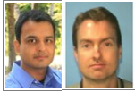
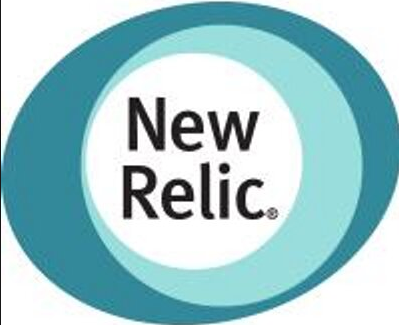

Year in Review - 2014
Enterprise Service Assurance
We have had quite a year in Enterprise Service Assurance in 2014. Walk through time using the quarter or heading buttons below to reflect back on some of our key moments thorughout the year....
Q1 2014
- TEAM
-
Brad Chandler - BRAVO - Bringing Spectrum within Compliance
Anil Kumar - BRAVO - Moving non-prod device up/down to BPPM as a result of Spectrum compliance.
Erik Larson - BRAVO - Marsys retirement $100k in savings
Dileep Kolli - BRAVO - BMC Adapter Fix
Recognition - Team lunches and dinners recognizing team efforts and new team members.
Anil gave a killer presentation on Cricket that we still reflect on today!!
- Partnerships
-
Brad Chandler - Worked with the IOC to shift 50% of the operational work from Spectrum
Erik Larson - Worked with the IOC to shift 80% of the BSM work.
Jenny Stern - Worked with the ETS App Support team on peer training to later shift work.
Matt Ogden took over as the primary developer on xMatters as part of the realignment.
Beth Fuller took on a vendor relationship and work intake role with the team.
- RE-ORGANIZATION
-
We added new functions to the team as of 1/1 and some great new team members. Welcome to the team Dan Peduzzi, Matt Ogden, Dileep Kolli, and Beth Fuller!!!
The new organization drove our need to re-brand and start thinking differently about our value proposition to the organization.
- Patrol Agent Rearchitecture
-

Joe Hsu worked with internal teams and BMC to upgrade and re-architect PATROL overall and even define a NEW Patrol Agent process which is easily repeatable for future upgrades.
- Blancco Management Product
-
Dileep Kolli Installed and Setup Blancco Management Console application in production. It allows to store erasure certificates that were generated part of disk/server erasures.
- Re-Branding 'Monitoring Tools'
-
We took a few days off and spent some time formally learning how to re-brand ourselves into a Service Assurance organization, creating a plan for re-introduction into Liberyt Mutual as a valued service/platform provider.
Erik kicked off a new project for marketing Service Assurance, including publishing our products on MyConnections.
- Spectrum Licensing
-

Brad and Anil worked to reduce our Spectrum entitlements to avoid a $1m budget risk due to license compliance issue. The result was a very rapid move of non-prod to BPPM for stateful monitoring. The feedback from IT Contracts was that they were impressed with our ability to react and execute so quickly to reduce financial risk while maintaining service levels to the organization. A great accomplishment!
Q2 2014
- TEAM
-
Brad Chandler - BRAVO - CA PC Buildout and automation of ADA traps into Spectrum
Anil Kumar - BRAVO - HAL Builtout of BPPM on AWS
Madhu Thota - BRAVO - ADA Delivery to ISO for App Monitoring
Brian Allen, Brad Chandler, Anil Kumar, Erik Larson - BRAVO - SRM Overnight Testing.
Di Lau - BRAVO - Outstanding customer feedback on Troux support.
Joe Hsu - Promotion to
- Sr. Systems Engineer
We hired two interns for the summer -- Ryan Nie, and Seb Michel
- Partnerships
-
Erik Larson and Brad Chandler - Worked with Kathleen Seymour to move responsibility for quartlery DR activities.
Dileep Kolli - Provided a code fix to resolve the issue related to Missing Serial Numbers for printers in UMDB very quickly. This helped the remedy release to go in as scheduled.
- HAL on BPPM Delivery
-
What started with a simple problem proposed by Security Operations turned into an amazing opportunity for us to not only give a consumer exactly what they wanted, but allowed us to venture into the AWS cloud to see what the experience is like. Froma Security perspective they treat this service like their own now, marketing it to other teams. This is the ultimate end state that we can learn from, how to build enthusiasm within the consumer base. Great work on this Anil!!
- LI Summit/Off-Site
-
Several team members attended and presented at an off-site with LI to review requirements for conslidating ITSM needs in our new Global landscape.
- MyConnections Launch
-
Our marketing campaign launched in June with a release on the IAN message boards across Liberty campus locations directing people to the new Enterprise Service Assurance MyConnections site where everyone on the team contributed to including rich content that helps our consumers understand what products we support and services we provide.
Q3 2014
- TEAM
-
Dileep Kolli - BRAVO - uCMDB Application Discovery buildout and presentation to PI IT Sr. Leadership
Di Lau - Joined the team permanently as an ELH!! Welcome Di!
Matt Ogden took over as the primary developer on VDP leading the team in our modified Agile development process.
Team offsite
- Partnerships
-
Brad Chandler - Worked with the IOC to shift 10% more operational work from Spectrum
Dileep Kolli - Worked with the Asset team to build a database view to provide software installation information to MyAsset IT Portal for enterprise users and Managers to review their and their direct reports software licenses and usage.
- Application Dependency Discovery
-
Beth Fuller launched an effort with other ESA teams members to build and deliver Application Discovery and Portfolio Management, leveraging initially an engagement with PI IT to retire Server DNA.
Dileep demonstrated that uCMDB is capable of discovering application dependencies. Have diligently worked with PI, CI and ETS and designed the solution to integrate uCMDB with Troux for better application portfolio management. Implementation is targeted for the first quarter of 2015.
- Midrange Change Automation
-
Anil Kumar worked with the Hosting Automation team and Hosting Midrange to fully automate some tasks in incident and change management. This implementation has saved the organization over 1 full FTE of capacity annually and reduced 'white noise' significantly while increasing service and response levels to the specific file system sizing issues that occur.
- Retired Asset Center
-
Dileep Kolli, performed various activities like shutting down jobs and feeds to other systems to retire Asset Center and helped the Asset Management and Remedy team for a smooth transition into their new system for managing hardware Assets.
- CAPMAN POC
-
Beth Fuller launched a large scale multi-market POC on Capacity Management with CA. We ended the effort understanding a lot more about what our customers require in Capacity Management and will leverage that as part of future aspirations with capacity and performance management.
- Legacy CMDB Retirement
-
Den Peduzzi and Matt Ogden worked with partner organizations to remove dependencies on the legacy CMDB and retired all feeds to the environment!! Nice job guys!!
- Remedy CMDB Onboarding
-
Den Peduzzi and Matt Ogden worked with Trianz to transition the CMDB code and release process over the course of a few weeks. We are working collectively with Central IT teams to prioritize work and optimize the environment for steady state operations.
- NewRelic Onboarding
-

Madhu Thota worked with the Cloud Foundry team and New Relic to onboard and integrate NR into our ESA portfolio for performance management. This service is immature at this point as we work on a larger APM Enterprise strategy with the markets and Central IT.
- OpenSource Initiative -- ELK
-
Madhu Thota worked on a skunk works project for Service Assurance to bring in and prototype with the ELK stack, which is ElasticSearch, Logstash, and Kibana. This was a catalyst leading to our eventual Exc!te campaign, and the initial prototype of the ELK stack is proving to be a useful option for the RTC teams and potentially with the new DellBoomi deployment.
Q4 2014
- TEAM
-
Di Lau - Di was promoted to an ASD!! Congratulations Di!!
Bob Sears joined the team in November!!! Welcome to the team Bob!!
- Partnerships
-
Brad Chandler and Anil Kumar - Kicked off an effort with the IOC to better enable the IOC team to leverage tools directly to drive value into the IOC.
Jenny Stern - Completed left shifting of SCOM related work, resulting in 60% operational return on capacity in Service Assurance.
Dileep Kolli - Worked with the Asset Management team to automate the bulk license allocations in Flexnet Manager Platform application to reduce lot of manual hours that would be spent otherwise.
- Midrange Change Automation
-
Jenny Stern, Joe Hsu and Anil Kumar worked with the Hosting Midrange and Automation teams to implement closed loop automation completely removing the need for human intervention with specific filesystem capacity requests. This model will be foundational to how we deploy future automation capabilities in the Enterprise. This resulted in significant savings in Hosting Services. Great work here!
- Exc!te
-
We launched an internal team hackathon running 42 days with the premise of building data lakes to support ad-hoc querying of performance data independant of tools. I really need to thank the whole team for this one. Brad, Erik, Anil, Joe, Dileep, Madhu, Bri, Beth, Di, Dan, Matt and Jenny - Great job on this effort!! Of course we thank Bob as well, while new to the team he had great feedback during our prototype demos!!
We will present the results of the Exc!te challenge to Sr. leadership on 12/8/2014
- SCOM 2012
-
Jenny and Elena kicked off an engagement with Microsoft on our 2015 plans to upgrade our -large- SCOM environment to 2012 to keep pace with customer expectations and stability in the platform.
- Troux Consolidation
-
Dan Peduzzi, Di Lau and Beth Fuller worked hard all year to coordinate with the supplier and the market to retire the CI IT Troux instance and also migrate in Hosting, GS IT and LI IT into the Enterprise Troux instance. Nice work team!!!
- Enterprise Splunk
-
Erik Larson and Brian Allen are driving an effort working across markets and with Dan O'Sullivan in EA to centralize an Enterprise Splunk instance conslidating 5 unique licenses in the environment. The project is slated for completion on 12/31/2014. Keep up the great work!!
- SRM Migration
-
Really a team effort with Erik Larson driving the project for Service Assurance. Extensive amounts of work throughout the year form Bri, Erik, Brad, Joe, Jenny, Anil and Madhu to migrate our RIT's over to Service Request Management in Remedy. While the project is still ongoing, it is worth a Q4 mention as we hope to have the majority of the work completed by the end of 2014.
- HP SaaS - $1m in Savings
-
Erik Larson, myself and Paul Perrotta worked closely with HP for 3 months negotiating a deal that we eventually signed to retire 4 existing contracts with HP, retire internal infrastructure and maintenance work. The new deal moves our synthetic service to SaaS and will save Liberty Mutual over $1m over the 3yr term!!
- Global Fabric
-
Many of the ESA team have been involved in the Global Fabric initiative, working to consolidate infrastructure and capabilities related to monitoing and performance management. This work will bleed into 2015, but a majority of the work has been completed in 2014.
David Lanphear and Brian Allen - David worked as the SME with the LI team in implementing uCMDB discovery into their environment throughout 2014. With David taking on an LMS coaching opportunity in Q3, Brian has stepped in working with our intern Seb Michel to continue on working with LI to ensure full discovery of the LI asset environment.
Jenny Stern - Completed the migration of Global Specialty and LIU servers to LM SCOM, and implemented monitoring for new Global Fabric domain and International sites in support of companywide International integration efforts.
Joe Hsu, Anil Kumar, and Brad Chandler - Partnering with both the LI teams and Hosting Automation are working to implement key foundational requirements for connectivity in order to fully instrument infrastructure monitoring and ticket automation within the Midrange domain. This work will continue into 2015 with lingering requirements on the LI side still to be completed.